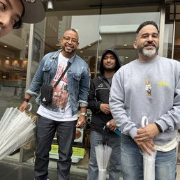

ボストンの家族と秋葉原アニメツアー

本音
本音Oh, obviously ramen.日本食はまずラーメンを選んでいる。昼食の案を考える材料
本音Can you use your Suga car here?Suicaの聞き違い。支払い方法はツアー参加者がよく気にする質問
今日の要点
- ボストンから来た家族と秋葉原でアニメツアーをした
- ガチャポンやパチンコとアニメのコラボを説明した
- 中古書店でマンガ選びをし、ワンピース初版の希少性を話した
- 餃子の店の予約リンクを送り、居酒屋で乾杯した
- ゲームセンターで対戦し、ドン・キホーテも案内した
- ゲームセンターで客と対戦ゲームを楽しんだ
- フィギュア店で呪術廻戦とワンピース、ナルトの商品を選んだ
- フィギュアは自国より日本で買うほうが得だと客が話した
- 持ち帰り用のスーツケースを買い、配送方法を相談した
- 翌日の新幹線の切符について相談して別れた
目次 全28行
録音1 ・ 11:28〜 ・ 180分
- 11:28挨拶・旅程・今日の予定
- 11:48写真・好きなアニメの話
- 11:58ガチャポン体験
- 12:08カード・ビル案内・パチンコ
- 12:16中古書店でマンガ選び
- 12:29ガンダムとマクロス探し
- 12:37店をはしごしレトロゲーム
- 12:44会計と景品の値段
- 12:52昼食探しと雑談
- 13:00服・無印良品の話
- 13:10アニメTシャツ売り場
- 13:20売り場巡りと夜の相談
- 13:28夕食の店決めと予約
- 13:38居酒屋での注文と雑談
- 13:46仕事の話と乾杯
- 13:51出身地と訛りの雑談
- 14:11お土産とドン・キホーテ
- 14:16食後の予定と会計
- 14:21ゲームセンターで対戦
録音2 ・ 14:28〜 ・ 58分
- 14:28ゲームの対戦開始と操作確認
- 14:38白熱するコンボ対戦
- 14:46ゲームのメンテ中説明と買い物へ
- 14:48フィギュア店と人気キャラの値段
- 14:56ワンピース・ナルトのフィギュア選び
- 15:02最後の店での会計と日米の価格比較
- 15:09駅へ戻る道とスーツケースの話
- 15:14スーツケース購入と配送方法
- 15:19新幹線の切符相談と別れ
朱書き 全83件
録音1 ・ 11:28〜 ・ 180分
Would you like I get? → Would you like me to get you something?「Would you like 人 to ~」の形にする。「Would you like I get」は文法が崩れている
Just arrived to Japan? → Did you just arrive in Japan?arriveの後ろは to ではなく in(国・都市)を使う。疑問文の形にもする
I mean, not only you guys come to Japan, maybe you came with the other families to Japan. → Did you come to Japan with other families too, or is it just you guys?言いたいことを一文で短く聞くほうが伝わる。元の文は語順が崩れて回りくどい
You had a breakfast already? → Have you had breakfast yet?breakfastには冠詞をつけない。「already」より「yet」のほうが疑問文では自然
What are you craving for? → What are you craving?craveは他動詞なので for は不要
So you said this is day three and you wait here for how many more days you got? → So this is day three. How many more days do you have in Japan?二つの質問が混ざっている。一つずつ分けて聞く
You find any of the culture gaps? → Have you noticed any culture gaps?過去から今までの経験を聞くので現在完了にする。主語と助動詞を省かない
So you don't have any problem yet? → So you haven't had any problems yet?problemは複数形にして、「これまでに」の意味を現在完了で表す
Yeah, now it's kind of like high season, I do this. → Yeah, it's high season now, so I'm doing this a lot.二つの文を so でつなぐと意味がはっきりする
So you more like into those that show you watch shonen anime, right? → So you're more into those shows—you watch shonen anime, right?主語の後にbe動詞が必要で、「those that show」も不自然です。
What do you think they will like? → What do you think they'd like?相手の好みを尋ねる自然な言い方です。
Anything else you want to give it a try today? → Is there anything else you'd like to try today?「何か試したいものはある？」と尋ねる自然な形です。
What do you like to play? shooting games or like it's the fighting games and maybe rhythm games like DDL → What do you like to play—shooting games, fighting games, or rhythm games like DDR?選択肢を並べる形に整え、ゲーム名は一般的な表記にしました。
You gonna play any video games nowadays anymore? → Do you play any video games these days?疑問文には助動詞が必要で、「nowadays」と「anymore」の重複も避けられます。
So you prefer the money than the computer now? → So you prefer money to computers now?「prefer A to B」の形にし、比較の表現を整えます。
I just gonna take you guys everything all the random places → I'm just going to take you guys to a bunch of random places.be動詞とtoが必要で、「everything all the random places」も不自然です。
You want to wait for me outside? → Would you like to wait for me outside?相手に丁寧に尋ねる自然な表現です。
Do you know how many stores where it's like a little bit on the less expensive side? → Do you know any stores that are a little less expensive?how many は不要。「安めの店を知っているか」は any stores that ... で自然に言える
Maybe he should decide because he got a limited budget, right? → Maybe he should decide, because he has a limited budget, right?現在の状態なので got ではなく has
If you don't find anything, you're like, we can come back. → If you don't find anything, we can come back.you're like は不要。「見つからなければ戻ってこられる」と直接言うほうが自然
I think it's gonna take so much time for him to decide what he wants, huh? → I think it's going to take him a long time to decide what he wants, huh?take + 人 + a long time の形が自然。so much time は不自然
Where else you went to? → Where else have you been?経験を聞くので現在完了。語順も疑問文にする
So you didn't have any siblings? → So you don't have any siblings?今きょうだいがいるかを聞くので現在形
If you don't have a coin there's a change that you can just put your bill and get your money. → If you don't have coins, there's a changer where you can put in a bill and get coins.change(おつり)ではなく機械の changer。coin は複数形にする
And where's your tattoo in the anime character? → Do you have any anime character tattoos?where's では意味が通らない。「タトゥーはあるか」と聞けばよい
we can also go to the store where you can get that many → we can also go to a store where you can get a lot of those特定の店ではないので a store。that many は a lot of those に
ATM is also a good way to do not exchange but inside the credit card. → Using an ATM is also a good way to get cash without exchanging money at a currency exchange.「ATMは両替せず現金を得る方法」と自然に表現できます。
Need some surprise? → Would you like a surprise?より自然。Needより Would you like / Do you want がカジュアル会話では標準
they don't even play this binary → they don't even play cards / don't even buy thembinaryは文脈に合わず、聞き間違いか不完全な発話の可能性。文意からはカード購入を指していると推測
they'll bother sex toys because you know yeah otherwise you know like people don't want to show that you how you get into the day → they sell adult products upstairs / keep them out of sight because, you know, people don't want to display that during the daybother（気にする）ではなく sell / display が正確。主語・文構造が不完全に聞こえる
Fist of Nostar → Fist of the North Star作品名の正式名称。複数回の繰り返しで定着した可能性がある誤った読み
they don't know each other → they pretend not to know each other / it's all connected文脈からギャンブル機の景品買取システムが裏で繋がっているという意図と思われるが、発話が曖昧
I'm trying to get the corpx, you move the corpx → I'm trying to catch them all, you gotta move along / keep goingcorpxは聞き間違い。文脈からポケモンのキャッチフレーズ『catch them all』を指していると推測
the guy who likes to eat sword → the guy with three swords / the swordsmanゾロのキャラ特性は『三刀流』であり、『剣を食べる』ではない。ユウキの説明が曖昧か、テキスト聞き取り誤りの可能性
This Gundam is really gory one actually. → This Gundam manga is a really gory one, actually.「a ~ one」の冠詞が抜けている。何の作品かも明示すると自然。
Would this work on America? → Would this work in America?国の中で使えるかを聞くときは on ではなく in を使う。
That's my mother-tang. → That's my mother tongue.「母語」は mother tongue。tang ではなく tongue と発音する。
So you know how much are these in the USA? → Do you know how much these cost in the USA?間接疑問文では語順が「how much these cost」になる。
That's why each place can't put different prices. → That's why each shop sets its own prices.意味が逆になっている。『店ごとに値段が違う』と言いたいなら can't ではなく sets など肯定で言う。
Eddie, can you believe that this area can hold 15 people in the maximum? → Eddie, can you believe that this area can hold 15 people at most?in the maximum は不自然。at most か a maximum of 15 people と言う。
And Myro, this GU is a sister company of the Uniqlo. → GU is a sister company of Uniqlo.会社名に the は不要。
when you get in the escalator like you have to keep to left like that → when you get on the escalator, you have to keep to the left.エスカレーターには in ではなく on を使い、left には the が付く。
no but when you go to the Osaka which is the west side Tokyo you have to sit in the right instead → But when you go to Osaka, which is in western Japan, you have to stand on the right instead.Osaka に the は不要。sit ではなく stand。『Tokyoの西側』ではなく『西日本』と言う。
Japanese curry rice also kind of unique. → Japanese curry rice is also quite distinctive.「独特だ」は “unique” より “distinctive” が自然です。
this one's also good but there's too many stores so you're gonna take a one or two see why is he getting here → This place is good too, but there are so many stores, so let's check out one or two.店の数には “there are” を使い、後半を自然な提案に整えています。
I gotta maybe check your size first. → Let me check your size first.I gotta maybe は不自然。Let me ~ の方が案内する側として自然。
Eddie, do you think that which one is better to him? → Eddie, which size do you think would be better for him?do you think の後ろに which を入れた語順が不自然。
we're trying to make him buy more more → We're trying to get him to buy more.make him buy more more は重複。get him to buy more が自然。
The taste is so different what we like what you guys like. → The taste is so different between what we like and what you guys like.between ~ and ~ を使うと比較がはっきりする。
That's why many people they don't go date with a yoga but they just happy with the anime girls. → That's why many people don't go on dates; they're just happy with anime girls.主語の重複と go date を直す。go on a date が正しい。
So I think we have the decrease in birth rates. → So I think that's why our birth rate is decreasing.we have the decrease in は不自然。
Like for the tonight, you said you're looking for the place to eat, right? → You said you're looking for a place to eat tonight, right?the tonight は誤り。the place より a place が自然。
So tonight you want to feel like going to those bars or what kind of style you're looking for? → So tonight, do you feel like going to a bar, or what kind of style are you looking for?want to feel like が混ざっている。feel like going に整理する。
Yeah, I picked the one place close to your hotel. → I picked a place close to your hotel.「the one place」は不自然。特定の1軒を選んだ場合は「a place」で十分
Kawaii is many cute in Japanese. → Kawaii means "cute" in Japanese.「many」は誤り。意味を言うときは「means」を使う
Yeah, Japanese people is not always quiet. → Japanese people aren't always quiet.「people」は複数扱いなので「are」を使う
I only play the music in the arcade. → I only play music games in the arcade.音ゲーのことなので「music games」が自然。「the music」は不要
How do you describe the people in Arizona as more compared to the other states? → How would you describe people in Arizona compared to other states?「as more」は不要。compared to で比較を表せば自然になる。
Is it easy for you guys to tell if you see the American people on the street here? → Is it easy for you to tell where Americans are from when you see them on the street here?「tell if」だと出身地を見分ける意味が伝わりにくい。tell where ... are from が自然。
Even maybe your chest is also really like a jungle, huh? → Your chest hair is probably like a jungle too, huh?「chest」だけでは胸毛の意味にならない。chest hair と言う。
When you plan to take her to come here, no? → When are you planning to bring her here?「連れてくる」は bring を使い、予定を尋ねる形にします。
How about your wife is also kind of ready to come to the different culture like this here? → Is your wife also ready to experience a different culture like this?疑問文の語順と自然な言い回しに直します。
How about your wife is also kind of ready to come to the different culture like this here? → Is your wife also ready to experience a different culture like this?疑問文の語順と自然な言い回しに直します。
So what I should do and eat and do everything, anything if I get to the Massachusetts or the Arizona, what is something special? → If I go to Massachusetts or Arizona, what should I eat and do? What's something special there?「do」の重複と「the」が不要。「if I go to」が自然で、質問も一つにまとめるとすっきりする。
So your girlfriend and your daughter didn't ask you anything to get? → Didn't your girlfriend and your daughter ask you to bring anything back?「ask you to bring ~ back」で「~を買ってきて」と頼む形になる。「ask you anything to get」は不自然。
Oh, even nearby here is one, yeah. → There's even one near here.「nearby here」は不自然。「near here」を使い、「there's one」で存在を言う。
This is anime called the manga comic called Dandudan, but has nothing to do with this restaurant. → There's an anime and manga called Dandadan, but it has nothing to do with this restaurant.「anime」と「manga comic」が混ざって文が崩れている。「There's ~ called ~」で言うと自然。
You need to do the bathroom first? → Do you need to use the restroom first?「do the bathroom」は不自然。「use the restroom」が自然。
I usually do the tour longer than expected → My tours usually run longer than expectedツアーが「長引く」は「run longer」。「do the tour longer」は不自然。
録音2 ・ 14:28〜 ・ 58分
I don't know how should I do that → I don't know how I should do that.間接疑問文では「how I should」の語順になる
Now you beat me again then. → You beat me again!「now」と「then」は不要で、過去形の「You beat me again」が自然
oh yeah I'm back to old good times → Oh yeah, I'm back to the good old times.定型表現は「the good old times(days)」の語順
Most of the game I wanted to play. → Most of the games I wanted to play aren't available today.複数形にし、動詞を入れて文を完成させる
That's why the gaming, they are under the maintenance, right? → That's why the games are under maintenance, right?「the gaming, they」と主語を重ねず、「maintenance」に冠詞は不要
Even Mario Kart is under the maintenance because of that problem. → Even Mario Kart is under maintenance because of that problem.「under maintenance」は冠詞なしが自然
Yeah, just because he is more popular character in the show. → Yeah, just because he's a more popular character in the show.popular character の前に冠詞 a が必要。
It's something old is always expensive because they don't make it anymore. → Old items are always expensive because they don't make them anymore.It's と is が重なっている。something old より old items のほうが自然。
oh you can pay here or downstairs either fine → You can pay here or downstairs, either is fine.either の後に is が必要。文も区切ったほうが自然。
Yeah, you can also pay here too. → Yeah, you can pay here too.also と too が重複している。
how many luggage you guys got when you come here → How much luggage did you bring when you came here?luggageは数えられない名詞なのでmuch。過去の話なので時制も過去にする
it's gonna take like this day a day or less than a day if it's in the morning → It'll take a day or less. If you send it in the morning, it can arrive the same day.this dayが意味不明。「1日以内、朝なら当日着」と分けると伝わる
So you better to, if you really worry about it, better to buy it now. → If you're really worried about it, you'd better buy it now.had better の後ろは動詞の原形。toは不要で、betterの重複も削る
But today, now, this is like a weekday, so shouldn't be that busy. → But today is a weekday, so it shouldn't be that busy.主語itが抜けている。todayとnowの重複も削る
マーク 全196件 ・ 本音とネタの印
録音1 ・ 11:28〜 ・ 180分
やることMake it 3.ボトル入りの水3本を用意する必要がある
客の声Day three, no more jet lag then.到着3日目で体調は問題なく、ツアーに集中できる状態だと分かる
客の声They don't watch any anime.同行者の一部はアニメに興味がないので、ツアー内容に幅を持たせる必要がある
客の声Oh, obviously ramen.日本食はまずラーメンを選んでいる。昼食の案を考える材料になる
ネタWhat does your favorite character eat?アニメと食事を結びつける質問は、ツアーでも使える話のタネ
客の声maybe we can just go with the flow昼食はあらかじめ決めず、歩きながら選ぶ方針になった
客の声More respectful here, more quiet.海外客が日本の文化をどう感じているかが分かる本音
客の声Subway is a little difficult, but then we got it.初めての旅行者が地下鉄でつまずく点は、案内のときに先回りして説明できる
ネタwe saw yesterday, riding the go-cartsユウキの仕事の話につながる、会話のきっかけになった場面
客の声I'm sticking with One Piece.相手が今も見続けている作品が分かる。
やることWhat do you think they will like?相手の好みを聞いて案内やおすすめに生かそうとしている。
ネタYou don't know Chainsaw Man.世代による作品の認知差が話題になっている。
客の声I just play Moro-Pan.相手の好きなゲームについての発言。ゲーム名は(聞き取り不確か)。
客の声PlayStation 5 is still in there.相手が今もゲーム機を所有していると分かる。
ネタOh, a little bit of everything. You know, even Japanese cuisine, so...料理人という推測につながる会話の手掛かり。
客の声I think you are 21 or something. 23. 23.飲酒年齢についての会話で、相手の年齢が確認されている。
やることsince he doesn't have much specific requests, I just gonna take you guys everything all the random placesこの後のツアーの進め方を相手に伝えている。
ネタpeople like you guys always forget to take a photo rightツアー中の定番の声かけ。写真を撮り忘れがちという話のタネになる
学びthere are so many tourist traps tooガイドとして値段や品質の違いを説明する場面で使える
客の声he got a limited budget, right?客の予算が案内先を決める条件になる
学びYou also read the manga?漫画を読んでいる客には、ネタバレへの配慮が必要
客の声Yeah, yeah, take so much time and money, huh?カードゲームに手を出さない理由が本音として出ている
やることIf you don't find anything, you're like, we can come back今決めなくてよいという案内の約束になっている
客の声I think it's gonna take so much time for him to decide悩む客のペースに合わせる必要がある
ネタbuy one of those shelves in your roomコレクションを飾る話に広げられる
客の声you were born in Mexico and now in the States客の背景。ツアーでの話題選びに使える
ネタyou're pretty much ready to stay here, huh?日本への関心の高さが出ており、深い話に広げられる
学びthis one says you need three of 100 yen so this is 300 yenガチャの料金の説明。ツアーで毎回使える
ネタI like how he so serious about it客の楽しむ姿が出ている場面
やることmaybe something for your sister hey what does she like家族向けの土産探しという具体的な目的
客の声she likes some cute animals姉の好みが分かり、店選びに使える
ネタhello kitty something like that次に案内する店の候補
学びwhen I did a tour for the family that the mom and dad they got bored and tired家族ツアーでは同行する大人への休憩配慮も必要。
ネタI was already paying rent. I'm on my own.ユウキの若い頃の暮らしが分かる。
学びI took some money out yesterday. I had a lot but I took some out of the 7-Eleven ATM.日本で現金を用意する具体的な方法。
やることYeah, if anything he just gives me the money and I take it out.同行者の現金調達を手伝う話になっている。
ネタthe white beard the old guyワンピース関連の景品か人物の話題らしい。
ネタthe regular price of that is just like one dollar, But if you go to the reseller, the second hand floor is going to be almost 10 bucks秋葉原の商売の仕組み・相場操縦を象徴する例。ツアー客の目を引く具体的数字
学びyou know like people don't want to show that you how you get into the day you know that they text or that's why日本文化への固定観念と現実のギャップをツアーで伝える視点
やることWhen you win, you don't get money but something else which is you get a piece of gold here日本のギャンブル仕組みを海外客に理解させる重要な説明ポイント。合法化の論理
学びthey get a 151 that's right there's so much more right that's a very first right yeah about the 1000 like that yeah yeah like 1050 something like thatポケモン市場の拡大・進化を示す数字。アニメ・ゲーム産業の成長を象徴
ネタif you wanna see this is what the ginta one of these 100 yet less than one dollar yeah it's like 50 or 60 cents each of them日米の価格格差は驚きの要素。アニメツアーで『安さ』を実感させる重要なポイント
やることpick by the character that you like so maybe you want to go to this side初心者客へのマンガ選書ガイダンス。ユウキのツアースキルを示す
ネタPeople spend several thousand dollars for one. Wow. Yeah, yeah, just a book. Just a book, yes.マンガの投資商品化・エンタメ産業の成熟を象徴。秋葉原ツアーの『商業化』テーマ
学びI mean Japanese people come here and they use it as a library. Because advocacy these are all you can read for free.日本のマンガ文化の一面・小売業態の課題。米国との違いを客に伝える学びポイント
学びThat's a good one. The manga movie is really good one, man. That was the first manga movie I saw. Exactly. I can't believe that. That's like 30 years ago, right?日本のマンガ・アニメ産業の歴史の長さ・先進性を示す。Gen Z客へのカルチャーシック
学びCause in Japan, manga is not only for kids but also adults.日本とヨーロッパ・北米のマンガ文化認識の違いを説明。秋葉原の多様性を実感させる
ネタThis is a really long one. No, because I would think they would have a box. So, they won and they got all of them? Nah, because it's not finished yet.販売戦略・商品構成の工夫。限定感を演出する小売テクニック
客の声I'm looking for the Zoro one because that's why he likes. But I don't see any Zoro here.人気キャラの品薄・二次市場での価値上昇を裏付ける実例。客の購買欲求を引き出す
ネタEven this morning I had two lessonsガイドと講師の二足のわらじの日常を伝えられる、雑談の鉄板ネタ。
学びBecause most of my students are from the States.生徒の時差に合わせて早朝レッスンになる、という働き方の事情が分かる。
ネタThis Gundam is really gory one actually.ガンダムの作風を外国人客に説明するときの話のタネになる。
ネタNow, do you want to make your own anime?客の関心が「見る」から「作る」へ広がる可能性がある質問。
ネタOh maybe you might know this one as well, Evangelion.海外客に通じやすい定番タイトルとして使える。
客の声I've heard of that. Yeah? Oh we haven't watched that though.知名度はあっても未視聴、という海外客の実態が分かる。
ネタMarineford? the water 7 right?ワンピースの人気エピソード名。客との会話で使える。
やることWe can go to the brand new one, like for the bookstore中古店で見つからなかった巻を探しに、次は新品書店へ行く。
学びI'm going to get a touch with the card.海外客がカード払いを使えるかは、案内で聞かれやすい点。
やることread the next buildingこのビルに目当てがなく、隣のビルを見に行く行動の記録。
客の声I like the green ranger.相手の子ども時代の好みが分かり、おすすめ商品の提案に使える。
学びThere's a region lock. So you need to also get it the console.海外客にレトロゲームを案内するときの注意点。
客の声I have to get one for my daughter.お土産の動機が「家族」だと分かる。
客の声She likes Mario. Mario one. Mario Kart she was playing.12歳の娘の好みが分かり、おすすめ商品の提案に使える。
ネタIn Shibuya, you have to try it, right?秋葉原の次の行き先として、ツアーの案内にも使える。
ネタThere's some unspoken rules.日本の店のマナーを海外客に事前に伝える話のタネ。
客の声Yeah, that's a good deal actually.どんな価格帯なら「お得」と感じるのかの手がかり。
学びone dollar is 150 yen客に値段を伝えるときの換算レートの目安。
やることwe can go to the that's cheaper one laterさらに安い店へ案内するという約束。
ネタMan, he's buying more than you.同行者同士の冗談で、場の雰囲気が分かる。
ネタthese are not for sale originally景品の値段が店ごとに違う理由で、ツアーで外国人客にそのまま使える説明になる。
客の声Yeah, that's actually already really cheap.外国人客の価格感覚が分かる。『安い』と感じる基準としてガイドに活かせる。
やることNow we're gonna find a restroom for him.ツアー中のトイレ探しは頻出の対応事項。
客の声They recommended it to me highly.客が人から勧められた店を目当てにしていて、昼食の候補を決める手がかりになる。
やることyou gotta go to use the one in upstairs客をトイレに案内するために、上の階へ誘導する必要がある。
ネタwe just have a beer so this is a happy hourビールを飲むときの雑談のタネになる。
客の声a friend of mine asked me if I could get like a sword客が友人から頼まれたお土産の希望で、買い物先の案内に使える。
やることlater we can go to some clothing storeセーターやTシャツを探す客に、後で服屋へ案内する約束をした。
ネタthis GU is a sister company of the Uniqlo安い服屋の違いを説明するときの小ネタになる。
ネタthe Pokemon, the Pikachu hoodie外国人客に受けそうな土産の候補になる。
客の声same is lame客の服選びの基準が分かる(誰の発言かは不明)。
ネタthere's no like the logo or something無印良品の特徴を一言で説明できる。
ネタanother unspoken rule in Tokyo東京と大阪で違うエスカレーターのルールは、外国人客に受ける話のタネ。
ネタJapanese curry rice also kind of unique.日本食の好みを尋ねる会話の話題。
ネタI heard that the Coke there is much sweeter than what we got.国や地域による味の違いの話題。
やることwe can do some photo shootingその場で写真を撮る提案がある。
やることthere's too many stores so you're gonna take a one or two店を絞って回る提案。
やることafter that we go lunch買い物の後に昼食へ行く流れ。
ネタyou know a puffer puffer fish right日本の食べ物としてフグを紹介している。
ネタOne Piece right here, Naruto, Dragon Ball right here.海外客に刺さる定番作品。売り場案内の基本ラインナップになる。
客の声as an adult you want that's a kakashi客が具体的に反応した作品。好みを探る手がかりになる。
ネタYou gotta stop eating.体型いじりの軽い冗談。仲の良さが分かる場面。
ネタI see some ghost in the shell stuff there too.店の品揃えとして紹介できる作品。
客の声the Rengoku高額でも客が興味を示した商品。価格帯の目安になる。
ネタwe got more JJK T-Shots here too次の候補として出した人気作品。
客の声she's more like that something like the dog doggy娘さんへのお土産の好み。次の提案に使える。
ネタMilo we got a gintama thing here tooMiloに勧めた具体的な作品名。
客の声They don't have Zelda?秋葉原のアニメ店にないゲーム系を求めている。
やることYou gotta go to the Nintendo store.ゲーム系の客には専門店を案内する流れ。ツアーに組み込める。
ネタwe got a the Gundam teeth right there売り場で実際に見せた商品。
学びBlack Clover is something super popular there but not in Japan.国による人気作品の違い。ツアーの話のタネになる。
ネタWe like something more than the anime with the cute girls like that.日本の好みの特徴として紹介できる。
ネタSo I think we have the decrease in birth rates.客が笑う話題。ただし出す相手は選ぶ必要がある。
ネタThat Tachikoma. That machine one.攻殻機動隊のキャラクターグッズ。客の関心が高そう。
ネタOh, got a nice hoodie right there.Tシャツ以外の商品の提案。
学びI don't see the Karasuno one. I think that one is sold out.人気商品は売り切れやすい。次回の案内で先に在庫確認をする。
客の声Probably not sushi夕食の希望。寿司以外を探す。
やることmaybe some izakaya, Japanese bar夕食の候補。店探しの方向が決まった。
ネタthere is also catcher here次に案内できる場所の候補。
やることyou said you're looking for the place to eat客から出た希望で、夜の店探しが必要。
客の声sit at a bar type of bar席のスタイルの確認が必要。bar という言葉が伝わりにくかった。
ネタHow about, yakiniku?外国人客への食事提案の定番。焼肉の説明の仕方をツアーでも使える
客の声There's a cheaper place is nearby though.客が価格を気にしていることが分かる。店選びの参考になる
客の声My little sister was just here, she got engaged.客の家族の近況。次に会った時の話のタネになる
やることyou will take your mom coming here再訪の可能性がある。母親向けのプランを考えておける
やることI just sent you some link.予約用の情報を送った。客が予約したかどうかを後で確認する
ネタYeah, we're getting the sake if you want.飲み物の勧め方の実例。日本酒を話題にしやすい
学びHighball is like sparkling water and whiskey.ハイボールの短い説明。ツアーでもそのまま使える
ネタHorse sashimi. It's also special here.外国人客の関心を引く話題。反応を見て次に活かす
学びKawaii is many cute in Japanese.日本語の単語紹介が会話のきっかけになった
客の声you didn't like the highball, you can exchange it客が初めての酒を試すのをためらっていた。気配りの例
ネタSometimes things sound the same.言葉の音の一致は、英語レッスンやPodcastの話のタネになる
客の声Especially compared to the USD.円安で日本が安いという旅行者の実感。ツアー提案に活かせる
ネタI'm thinking he has money on these games.バスケの試合を賭けの対象にして見ていた、という雑談のネタ
やることI gotta bring her back some matcha.客が上司の娘に抹茶を持ち帰ると約束した。お土産の相談を受けるかもしれない
客の声Yeah, because I cook for the baseball players.客の仕事が分かる話。野球や食事の話題につなげられる
やることThere's one, we can try that later.ゲームセンターに行く約束。時間が取れるか確認する
ネタAlmost like the one in the Olympic village.客の職場の食堂の規模を伝える、印象的な例え
学びYou know how to say cheers in Japanese?乾杯の言葉を教えるやり取り。レッスンやツアーで使える
客の声I like the cup better.客が日本酒より器に興味を持った。器の話題を広げられる
客の声I would say chill and a lot of hiking.アリゾナの人柄を表す本人の言葉。ツアーでの雑談や質問のネタに使える。
ネタMexican people, this is taco sushi or something like that?海外の「なんちゃって寿司」の話は、ツアーや日本語レッスンで盛り上がる話のタネになる。
客の声I can tell the Boston accent.アメリカ人の訛りの感覚が分かる。英語レッスンやツアーの話題にできる。
ネタLike a Goku.アニメの例えで場が和んだ。アニメツアーの小ネタになる。
ネタEven ramen originally from China. Even this dumplings originally from China but we just made it our style.日本独自に変化した料理や店の話題として使える。
客の声I'm gonna take a little picture to show your mom, right?食事中の家族とのやりとりが伝わる。
やることDumpling with some soy sauce, maybe you wanna dip.食べ方を案内する表現として次回に活かせる。
話のタネIf you hear Spanish, can you tell if they're from Spain or Mexico?食事中の言語や地域差の話題に広げられる。
学びyou know what natto is? The fermented beans.納豆を英語で簡潔に説明する例になる。
やることIf you like spicy, we got the marble tofu here too.料理名の聞き取りは不確かだが、辛さの好みを確認して勧めている。
客の声It's a great restaurant pick to try all these different dishes.店選びへの感想が伝わる。
学びLike eight, nine years.ガイド経験年数を具体的に伝えている。
話のタネSometimes I guided some famous people that I can't tell the name, but yeah.守秘に配慮しつつ印象的な経験を紹介している。
ネタthe next weekend they got me the ticket VIP ticketRed Hot Chili Peppersにまつわる意外な体験談。
客の声Yeah, she's Colombian.妻の出身地について相手に伝えている。
客の声I think my girlfriend's probably gonna go see her mom.相手の予定が分かる発言。
ネタYou gotta eat a lobster roll.客の地元グルメ。アメリカ人客との雑談や、ツアー中の食べ物トークのタネになる。
客の声my girlfriend gave me a lift. Yeah, a box of stuff客が日本で買うものを頼まれている。買い物スポット案内に活かせる。
客の声She wants skin products.客が頼まれた具体的な土産。ドン・キホーテや薬局への案内につながる。
ネタThat one is open for 24 hours.ドンキの強みとして客に刺さった。夜でも買い物できると案内できる。
ネタYou should put your daughter's name on it娘さんへの土産にもなる、名入れ箸という提案。ガイドの提案ネタとして使える。
ネタbut this one came first店名がアニメ『ダンダダン』より先という豆知識。客に話せるネタ。
やることfinish with the place where you can get cheap figurinesツアー最後の立ち寄り先。客の希望と合うか確認しておく。
学びmaybe you wanna split the payment別会計とカード可否を会計前に店へ確認しておくとスムーズ。
客の声I'm just having fun with you guys客が楽しんでいる本音。延長しても大丈夫なサイン。
学びI usually do the tour longer than expected延びやすいので、開始時に後の予定を聞く習慣にできる。
学びthe computer mode1人でも遊べると説明すれば、ゲームに自信のない客にも勧めやすい。
学びthat one connected to this one台同士が接続されて対戦できる仕組みで、客が納得した。説明の型として使える。
録音2 ・ 14:28〜 ・ 58分
客の声Can you use your Suga car here?ゲームの支払い方法は、ツアー参加者がよく気にする質問になりそう
客の声It's a good game!相手の素直な好反応で、ツアーで勧めるときの材料になる
ネタHow about playing those newest ones?最新作を試す流れは、ツアー客に案内する体験として使える
やることyeah i want to see if i can play one first案内前に自分でオンラインモードを確認しておく必要がある
ネタoh what's that character?新キャラに気づいた驚きは、ゲーム好きの客との話のタネになる
学びIf you wanna play against your friend, choose your leader of course.友達対戦の設定方法は、ツアーで客に説明できる
やることPlease set this one when you play in this tour, right?ツアー用の標準設定を決めて店側に伝える必要がある
客の声I like the old guy.古いキャラが好まれるという声で、客層の好みのヒントになる
ネタI'm back to old good times懐かしさは、レトロ文化を案内するときの話のタネになる
ネタI thought he was a foreigner.国籍の思い込みが話のタネになりそう(聞き取り不確か)
ネタYeah, just surprise him.遊びながら相手を驚かせる流れは、盛り上げ方の参考になる
客の声Oh yeah one more one more one moreもう一回と言いたくなるほど夢中になった本音
ネタEven Mario Kart is under the maintenance人気ゲームも止まっていたという事実は、客への案内で使える
ネタThere's only one crazy taxi.Dreamcast由来の作品だけが遊べるという話は、レトロ好きの客に刺さる
やることOK, now we go buy.このあと買い物に移動した。何を買ったかは聞き取れず不明
ネタjust because he is more popular character in the showフィギュアの値段が人気で変わることを、ツアーで説明するときの定番ネタになる。
客の声for one of my friends' kids買う目的が分かる。お土産向けの提案ができる。
客の声I'm looking for something small荷物に入れるため小さいものが欲しいというニーズが分かる。
客の声Do they put the prices based on how popular the characters are?客が本当に気にした疑問。ツアーの解説に入れられる。
学びIt's something old is always expensive because they don't make it anymore.値段が高くなる理由として、人気に加えて希少性を説明できる。
ネタProbably gonna have to buy suitcase.買いすぎる客の定番の笑い話になる。
学びthese are set though the two women's a good dealセット品は単品より得になることがある。案内のコツになる。
客の声Maybe Itachi cause you were Itachi.客の好きなキャラの手がかりになる。次の提案に使える。
学びmaybe you don't need the box you can just take that box out荷物を減らす実用的なコツ。ただし贈り物は箱ごとのほうがよい。
客の声two of them just less than 30 dollars客が安いと感じた価格の目安になる。
客の声this is my character, Mr. Saduna客の推しキャラが分かる。
学びthis is sure to save you space箱を外す理由として、客に伝えやすい説明。
客の声At home it's like $30.日本が安いという客の実感。価格の売り込みに使える。
やることmaybe I can tag your account客のIDを聞いてタグ付けする約束。忘れずにやる。
ネタThey open for 24 hours.牛丼店の便利さとして、外国人客に紹介できる。
学びwithin your budget買い物ガイド中の予算の聞き方として使える表現
客の声if he keeps buying shit it's not gonna fitお土産が増えて荷物が入らない、という客の実際の悩み
客の声There's so much more space.購入の決め手になった一言。サイズ選びの説明に使える
ネタship your suitcase from the convenience store to your hotelツアー客に役立つ手ぶら移動のコツ。Podcastのネタにもなる
客の声You want a sword umbrella?外国人客が好む日本土産の例
やることthe password is now set in zero zero zero客に初期設定の暗証番号の変更を忘れず伝える
やることbecause we got to go to Kyoto tomorrow翌日の移動予定。切符の手配が必須
客の声I'd rather buy it today than tomorrow.客が当日購入を決めた本音
学びYou have to put the date and the time.新幹線の指定席の買い方として毎回伝えるべき点
次に活かす
- 開始時に後の予定を聞き、延びやすい時間配分に備える
- 別会計とカード可否を、会計前に店へ確認しておく
- ゲームは1人でも遊べると説明し、自信のない客にも勧める
- 家族ツアーでは同行する大人の休憩にも気を配る
- 案内の前にゲームのオンラインモードを自分で確認する
- ツアー用の標準設定を決めて、店側に伝えておく
- 値段が高い理由は人気に加えて希少性だと客に説明する
- 新幹線の指定席の買い方は、毎回客へ伝える
文法のまとめ
録音1
- 現在完了の抜け：Where else you went to → Where else have you been
- 前置詞の誤り：arrived to Japan → arrive in Japan
- 冠詞の不要：a breakfast → breakfast
録音2
- 間接疑問の語順：how should I → how I should
- 不可算名詞：how many luggage → how much luggage
- 複数形の抜け：Most of the game → Most of the games
‹ ゲスト帳にもどる